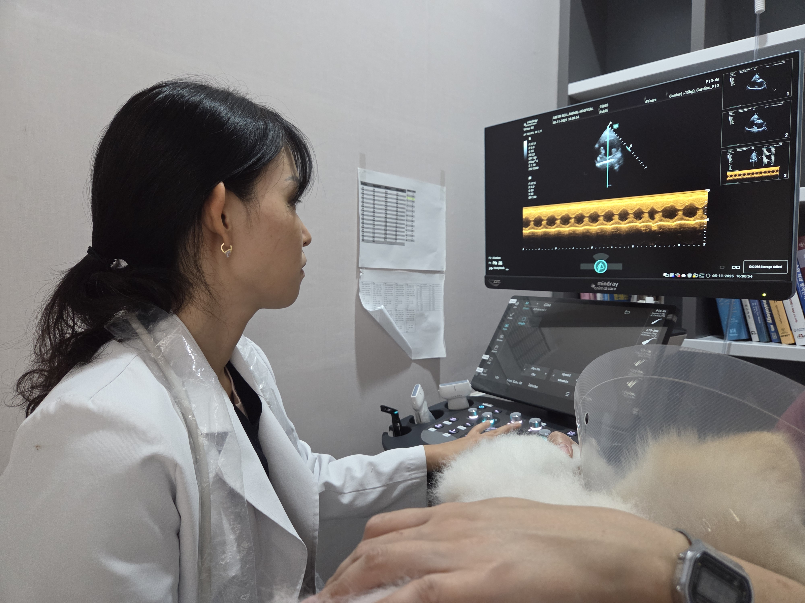
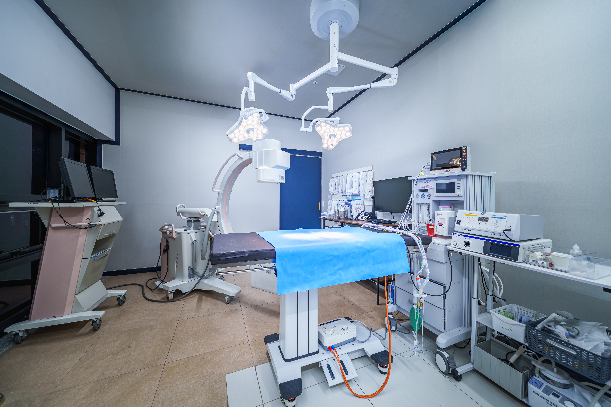

정밀 진단 시스템
정확한 진단은 치료의 시작이며, 예방의 출발점입니다
그린벨동물의료센터는 증상이 나타난 이후의 치료뿐만 아니라,
질병을 조기에 발견하고 예방하는 과정 또한 중요하게 생각합니다.
혈액검사, 영상검사 등 다양한 데이터를 종합하여 환자의 현재 상태를 정확하게 파악하고,
질병의 진행을 미리 예측하고 관리할 수 있도록 합니다.
말로 표현하지 못하는 동물의 상태를 조금 더 일찍,
정확하게 이해하기 위해 정밀한 진단 과정을 중요하게 생각합니다.

혈액 및 기본 검사 시스템
정밀한 수치 분석이 가능한 검사 장비
- IDEXX ProCyte (혈구 분석)
- IDEXX Catalyst (혈청 화학 검사)
- IDEXX Sedivue (요침사 분석)
- IDEXX Urine Analyzer
- Vcheck 2400 (호르몬 검사)
- 혈액 응고 검사 장비
- SNAP 검사 키트
기본 혈액검사부터 호르몬, 감염성 질환, 응고계 검사까지
병원 내에서 대부분 시행 가능합니다.



영상 진단 시스템
눈으로 확인하는 정밀 진단
- 디지털 방사선 (X-ray)
- 초음파 검사
- CT
내부 장기의 상태를 보다 정확하게 확인하고 진단할 수 있습니다.

특수 진단 및 수술 연계 장비
진단과 치료를 동시에 고려한 장비 구성
- 내시경
- C-arm
진단뿐 아니라 수술 및 치료 과정에서도 활용됩니다.
그린벨 건강검진의 특징
경험 많은 수의사의
체계적인 검사 진행
정밀 혈액 검사 및
다양한 특수 검사
심장초음파, 복부초음파,
CT까지 가능한 종합 영상검진
검진 결과에 기반한
맞춤 건강관리 상담
말로 표현하지 못하는 환자의 상태를
보다 정확하게 이해하기 위해
그린벨은 진단의 깊이를 중요하게 생각합니다.
보다 정확하게 이해하기 위해
그린벨은 진단의 깊이를 중요하게 생각합니다.